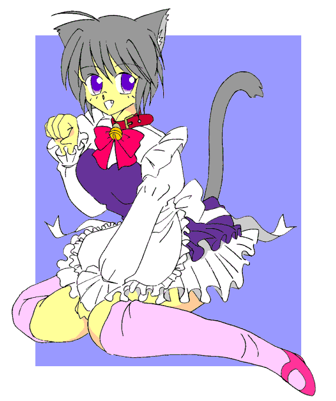

ペット稼業もラクじゃない！？
作：あむぁい
｢あ、あの……今度の日曜日とか、空いてる？｣
｢え？｣
放課後の教室。
彼女――石原まゆみの問いに、ぼく――那須陽一はどぎまぎする。
それって、お誘い……ですか？
｢えと……｣
｢駄目だ。陽一は今度の日曜日は都合が悪い｣
割り込んだのは鈴木利光。昔からの悪友だ。
｢あんたには聞いて無いわよ！｣
まゆみが眉を吊り上げる。まずい。
｢あ、ごめん。今度の日曜日は都合が悪いんだ。本当にごめん｣
｢次の次の週末も、その次も多分都合が悪い｣
余計な茶々を入れる利光をぼくは睨む。
｢利光！｣
｢……なんだよ、本当の事じゃねーか｣
｢ごめんね、又今度……石原？｣
石原の瞳にはうっすらと涙が浮かんでいた。
｢勘違いするんじゃねえ！ なんで那須にあやまられなけりゃならないのよっ！ 馬鹿にすんな！ ボケ那須！｣
｢いってえ！｣
全体重をかけて足を踏まれたぼくは、悲鳴をあげる。
荷物をまとめて、どたどたと教室を出て行く石原。
追いかけようとするぼくの腕を、利光が掴む。
｢今日は金曜日だぞ｣
｢わかってる｣
ぼくは唇を噛む。
また週末が来てしまったのだ。
人気の少なくなった学校の廊下を、ぼくたちは行く。
｢ああ、本当なら青春まっさかりなのに……｣
｢本当もクソもあるか。第一あんなキツイ女お前にゃあ合ねーよ｣
｢うるさいっ｣
石原には石原の良い所があるんだよっ。
｢なんで、陽一なんだ……まゆみの奴｣
｢え？｣
まさか、利光も？
｢彼女まで巻きこみたくは無いだろ｣
真剣な言葉にぼくはひるむ。
そうだ、彼女だけは絶対に巻きこみたく無い。
こんな事に……
｢誰もいないな｣
｢うん｣
ぼくたちは周りを確認して、３階の視聴覚教室の隣の男子便所の個室に入る。
１７時５０分。
ちょっと早く来すぎたか？
ぼく達は、ぼーっと個室で時間の来るのを待つ。
｢……男子便所に二人で入るのってなんか嫌だな｣
｢うるさいっ！｣
そんな事わかってる。
誰かに聞かれたらどうすんだ！
利光の方が一回りは背が高いので、襲われたらっ……て、何を心配してるんだぼくは？
｢だいたい利光はいっつも一言……うっ！｣
わき腹に差し込むような痛み。
は、始まった？
くっ。
苦痛に顔が歪む。
脂汗が額を伝う。
｢う……くふぅ｣
思わず漏れる声を利光の手が遮る。そしてそのまま壁に押さえつけられる。
学生服が沸騰しはじめ、紺地に白のエプロンドレスに変換されていく。
ズボンが蒸発し、肌がさらされる。
長いソックス。短いスカート。
シルクのパンティ。
サイズがきっつい。
しかし、その衣装に合わせて、体が徐々に縮んでいく。
ううっ。痛いよぅ。
物理法則を無視して体が軽くなっていくのが分かる。
ああっ。あああっ。
胸にほのかな膨らみ。
そして、頭の上にネコミミがにょきにょきと生えてぴくんと動く。
｢うぐっ。お、俺も……｣
ぼくを押さえていた利光の腕が離れて体をくの字型に折る。
あいつの方も始まったのだ。
ふわわわ。
全身が痙攣する。
は、はやくアレを……
ボクはポッケの中から首輪を取り出し、震える手でカチャカチャ言わせながら、それを広げる。
そして、それを首に巻きつけてきゅっと締めて、パチンッと止めてしまう。
その瞬間、ボクのおちんちんがしゅるんっと中に入って反転する。
ボクはキラキラとした透過光を放ちながら、ポーズを取ってセリフを放つ。
しっぽがくるんと丸まる。
｢暗黒改造獣化実験帝国、帝王ガイデルス様の可愛いペット。小猫姫サリア、華麗に変転にゃ♪｣
狭いところでポーズを取ったので、苦しむ利光に結果的にパンチを放ってしまう。
ごめんな。いっつも。
「痛ってえ。たった一つの命を捨てて、生まれ変わった不死身の体！ 暗黒改造獣化実験帝国のスズキノイド第６代目、オオカミスズキ、ここに生誕！」
オオカミを直立歩行にしたような正統派のストロングスタイル。今回のスズキノイドは期待が持てそうだ……って、作戦が成功したら全人類はボクらのドレイだ。
それは困る。
１８時きっかりに変身が終わると、トイレの天井が妖しく光る。
転送装置が作動したのだ。
地球のすぐそば。しかし、異次元にそれは有った。
全人類のペット化を企む、悪の集団。暗黒改造獣化実験帝国の本拠地、夢幻城。
そして、その中心、帝王の間にボクらは召喚されていた。
玉座に座る帝王ガイデルス様。身長は４ｍ強。何本あるのか分からない沢山の腕と触手。そして、常に足は座禅をくんでおり、少なくともボクは彼が歩いたりするのを見たことが無い。トイレも見たこと無いけど……不思議だ。
｢来たか｣
そして、ガイデルス様の右前方にレオタードに甲冑と大剣が勇ましいジェネラルバニー。お色気と戦闘両方担当のお姉さんだ。
｢小猫姫サリア｣
｢オオカミスズキ｣
｢……只今出勤いたしました｣
｢……出勤だにゃ｣
ボクたちは口を揃える。
｢おおサリア、今日も可愛いのぉ｣
長く伸びたガイデルス様の腕が、さっそくボクの首ねっこを持って、ボクは宙に浮く。
すーいっと、宙をとんで、すとん……っとガイデルス様のおひざの上に乗せられてしまう。
｢え、えへへ｣
ちょっと怖くなってボクは愛想笑いする。
今のところボクだけには優しいけど、この人はっきり言って無茶苦茶です。
正真正銘の犯罪者で、ピーです。
な、なんとか弱点とか探って地球侵略とか止めて欲しいんだけど。
｢では、早速ですが、今回の作戦です｣
ジェネラルバニーお姉さまがモニターを使って作戦を説明するのを、オオカミスズキの利光は片膝付いて真剣な顔で聞いている。なんでも、キャットフードに洗脳薬を混ぜて食べさせて、日本人をペットにしてしまうと言う作戦のようだ。
キャットフード美味しいもんね。
コリコリッ。
聞いていてお腹が空いてきたボクはキャットフードを頬張る。
うんっ。今度の作戦はいけるニャ。
……って、うわぁ。
また食べちゃった。
ボクは慌ててキャットフードをこぼす。
気のせいかもしれないが、キャットフードを食べるたびにボクはどんどんネコに近づいていってる気がする。
｢ん？ どうしたサリア？ 大丈夫か｣
ご主人さまがボクを心配そうに除きこむ。
目は笑ってるけど、顔が怖すぎる。
｢にゃ、にゃんでもないにゃ｣
ご主人さまがボクの喉をなぜなぜすると、ボクはすぐ気持ち良くなってにゅーっと伸びてしまう。
｢では、作戦開始です！｣
｢おおーっ！｣
バニーお姉さまの宣言に意気を上げる、怪人オオカミスズキと戦闘員の皆さん。
ボクは利光を呼び止める。
｢死ぬにゃよ｣
｢おう。任せておけいっ｣
豪快に笑うあいつ。
ばいばーい。
手を振るボク。
｢よーし、今日は何して遊ぼうか｣
ご主人さまがにっこり笑う。
｢ボール遊びっ！｣
ボクは元気に宣言する。
お気に入りのボールが出てきて、ボクは時を忘れてボールと戯れる。
そして、ご飯っ！
おねむ！
遊び！
おねむ！
トイレ！
おねむ！

｢にゃんにゃ、にゃんにゃ、にゃんにゃにゃー｣
お風呂。お風呂。お風呂だにゃー。
ご主人さまのブラシがボクの全身を隈なく洗う。
お風呂は気持ちいいから大好きだにゃー。
ごろごろごろ。
ボクは喉を鳴らす。
｢気持ち良いか？｣
ごろごろごろ。
｢そうかそうか｣
ご主人さまは目を細める。
ウィーン。
その時、自動ドアが開いて、バニーお姉さまと利光が入って来る。
……怪我してるにゃ？
｢大丈夫かにゃ？｣
｢バカモーンッ！｣
ご主人さまの大音声に、ボクたちは縮み上がる。
すっかりネコしてたボクはその時我に帰る。
うう……恥ずい。
裸首輪じゃん……
ボクは湯船にブクブクと沈む。
｢も、申し訳ありません。奴らに感づかれてしまい……｣
｢たわけ〜｣
四方八方から触手がジェネラルバニーを囲みたちまち縛りあげる。
｢バ、バニー様……うぎゃああ｣
庇おうとしたオオカミスズキはたちまち電撃で黒焦げになる。
だ、大丈夫か、利光。
｢あ、あの。ガイデルス様っ。その辺で｣
ボクは恐る恐る、ガイデルス様を止めようとする。
目の前ではバニーお姉さまが苦しげに悶えている。
｢だ、駄目ですっ。止めて下さいっ。お姉さまが死んでしまいますっ。お姉さまを苛めるなら代わりにボクをっ｣
ボクは湯船からガバッっと立ち上がって叫ぶ。
え？
言ってしまったボクが硬直する。
｢ほほお……｣
ぎろり。
こ、怖い〜。
ボクは縮み上がる。お姉さまの責めは一旦中断されたけど、代わりにボクが大ピンチだ。
｢なんてサリアは優しいんだ｣
頬ずり。うええ、気持ち悪いよぉ。
｢ジェネラルバニー、今度だけはサリアに免じて許してやる。行け、そして必ずや作戦を成功させよ！｣
｢は、はいっ｣
よろつきながらも、しっかりと立ち上がり衣服を整えるジェネラルバニー。
｢お姉さま｣
ボクはぽたぽたと水を垂らしながらバニーお姉さまに駆け寄る。
｢サリア、助かったよ｣
お姉さまはボクを優しくゴシゴシとなぜてくれる。
ごろごろごろ。
ああっ、お姉さま、血が、可愛そうに……
ボクはぺろぺろと傷を舐める。ボクの舌には治癒能力があるのだ。
ぺろぺろ。
ぺろぺろ。
｢ありがとうサリア。私は行かねばならない｣
｢お姉さま｣
うるうるとお姉さまの瞳を見つめるボク。
｢行って参ります！｣
敬礼して出撃するお姉さまと利光と戦闘員たち。
｢がんばるにゃー！｣
ボクは元気に彼らを送りだす。
｢……さて。何して遊ぼっか？｣
｢ボール遊びっ！｣
ボール遊び大好きっ！
ごろごろごろ。
ふにゃん。
ふにゃん。
ぐるるる。
うきゃ。
にゃはははは。
にゅ？
にゃー。にゃー。にゃー。
く、くすぐったいにゃ……
｢・・・ぐわぁぁぁぁぁ！｣
「……！！」
次元を通して感じた利光の悲鳴に、ボクは我に返る。
あ、利光が……死んだ？
｢くっ、また失敗か｣
ご主人――ガイデルス様がつぶやく。
利光……
｢ガ、ガイデルス様っ｣
｢ん、行くのか？ サリア、お前は優しいのぉ｣
ボクはこっくりとうなずく。
｢行ってくるにゃ｣
ボクは帝王の間から廊下を通ってさっそうと飛行甲板へと出る。
ヘルメットをしっかりかぶり、クトルファントム戦闘機に乗り込む。
小柄なボクは操縦席に深く座る。
スロットルを一杯引いて発進する。
１００Ｇの急加速。
待ってろ、利光。お前を死なせはしないにゃ。
戦闘地帯に垂直着陸して割って入る。
｢待っていたぞ、サリア｣
｢お姉さま、利光はどこにゃ？｣
ボクはヘルメットを脱いでバニーお姉さまに戦況を確認する。
｢バクサツボンバーで……｣
あいっつ。あれほど死ぬにゃっていっにゃのにっ！
｢また出やがったぞっ！｣
｢小猫姫サリアってやつだ！｣
口々にわめく敵戦隊。
ボクはすたっと大地に立って、やつらをキッっとにらむ。
｢よくも、利光を！｣
｢トシミツって誰だ？｣
｢わけわかんねー｣
あ、緑のやつ頭をさしてくるくるって……ゆ、許さないにゃ！
ボクはポケットから懐中時計を取り出す。
｢げっ｣
慌てるやつら。
｢時・間・停止〜っ☆｣
カチッ。
ポーズと共にスイッチを押す。
ボクはボクの周り以外の時間を１５分止める事ができるのだ。
そして静寂が訪れる。
｢利光〜｣
ボクは利光の死体を捜す。
くんくん。
あんまし、鼻は利かないんだけどな。
どこにゃー。
くんくん。
くんくん。
｢あったにゃー！｣
ボクはついに利光の破片を見つけて声をあげる。
可愛そうに。
こんな姿になってしまって。
ボクはそれを大事そうに拾って頬ずりする。
今、助けるからね。
ボクはぺろぺろとそれを舐め出す。
ぺろぺろ。
ぺろぺろ。
死ぬな利光。
ボクが帝国に拉致られようとした時、ボクを庇ってくれた利光。
でも、なんの役にも立たなかった利光。
あっさり殺されちゃった利光。
生き返らせて貰うのにボクがえらい目にあった利光。
でもっでもっ。
死ぬなっ！
ボクを一人にしないでっ。
ぺろぺろ。
ぺろぺろ。
……お。
かすかに動いた？
まだ、イけるにゃ？
ボクはそれを優しく丹念に舐めあげる。
大丈夫。
キミは。
ボクが。
絶対に助けるから。
さあ。
立って。
立て。
立つにゃーっ！
だ、駄目なのかにゃ。
ねえ、がんばって。死んだら駄目にゃ。
利光っ！ としみつーっ！
キラリーン☆
美少女の涙が奇跡を呼ぶ。
どくん。どくん。
死んだ筈の利光の細胞は再び活性化しはじめる。
きたっ。きたにゃ。
よしっ。その意気だにゃ。死ぬにゃ、としみつっ。
ボクは脈動をうつ利光を、ここぞとばかりに舐め上げる。
直れっ。直れっ。
元気になあれっ。
元気になって、
大きくなあれっ。
わっ。わわわっ。
ボクは急に大きくなりだした利光にびっくりして取り落としてしまう。
むく。
むくむくむく。
やった。成功にゃ。
「巨大すずき〜！」
巨大化したオオカミスズキは岩を蹴り上げ、暴れ始める。
オオカミスズキ、怒り膨張モード作動だにゃ！
やったにゃー。
良かったにゃー。
「がんばるにゃー！」
ボクの声援にオオカミスズキは吠える。
「うおおおおーっ！」
「また巨大化しやがった」
「おのれー！ こっちも巨大メカだ！」
あ、あれっ？ いつの間にか時間が動き出している。
「良くやったサリア」
「あ。お姉さまー」
ボクはバニーお姉さまに駆け寄る。
ボクをなぜなぜしてくれるお姉さま。
ごろごろごろ。
ふにゃー。
ふるっ。
なんだかつかれちゃったみたいー。
「おい。サリアしっかりしろっ。サリア」
お姉さまのおっきな胸が気持ちいいにゃー。
お姉さまの声が聞こえる……
結局、あんなに大騒ぎしてボクが生き返らせたのに、巨大オオカミスズキのやつは３分で切り殺されたらしい。
敵の合体シーンの方が長かったにゃ。早すぎるにゃ。
まあ、切り殺される分には再生は楽らしく、今はもう元の人間鈴木利光の姿に戻ってちゃっかり生き返っている。
多分、第７代目スズキノイドとして生まれ変わったのだろう。今度はなにかにゃ？
今週も利光も無事だったし、地球侵略も失敗したし、まあ良しとしよう。
「残念ながら、今回の作戦は失敗だったが、なんとか来週までに次の作戦を考える。今週はもう帰ってよし」
バニーお姉さまはねぎらいの言葉を掛けてボク達にお給料をくれた。日曜日の夕方、ぼくらは解放されるのだ。
「あーオオカミスズキは今回二回死んだので、４階級特進だ」
「なんだか、ずるいにゃー」
「お前なあ。死ぬのがどんなにつらいか……いっぺん死ぬか？」
あ、本気で怒ってる。ごめんにゃ。
「オオカミスズキは次回より、１５等兵見習い付き主任補佐だ。これからも頼むぞ」
うーん。ウチの組織って……
悪の組織から給料をもらうのはちょっと抵抗があったが、これも悪の組織に資金的にダメージを与えてる事になるから無問題――と言う事にした。
「そろそろ時間だな。サリア首を出せ」
「分かったにゃ」
バニーお姉さまはボクの首に手を回すと、首輪をそっと外す。
「あっ」
ふるっ。
体が痙攣し、おちんちんが再び外に出てくる。
そして、体が膨張をはじめ、ぼくは再びもとの姿に戻っていく。
ふ、服がきつい。
完全に体が変化した後に。
服も元の学生服へと徐々に姿を変える。
変身の度に思うけど、なんで、変身する時は服が先で、戻るときは服が後なんだよぅ……
バニーさんがぼくのポケットに首輪を放り込む。
くっ。こんなの捨てられたらどんなにいいか……って、捨てたら二度と人間に戻れないんだけど。持ち物検査すごくスリリングなんだけど。
ぼくはポケットの中の首輪をぎゅっと握り締める。
「では、さらばだ」
バニーさんは転送装置で夢幻城に帰る。お仕置きとかされてなきゃいいけど。
ぼくたちもとぼとぼと帰路に付く。
週末ずっと無断外泊なんでまた怒られるよな。
「気が重いな」
「……陽一ありがとな。今度こそ駄目かと思った」
「いや、当たり前だろ、見捨てたら寝覚め悪いし……」
正面から見据えられてぼくはちょっと照れる。
利光はたまたまあの時ぼくのそばにいただけで巻き込まれたのだ。ぼくなんかのそばにいたせいで。
「……帝王の弱点とか秘密とかはわかったか？」
ぎくぅ。
「あ、いや。それは未だ……」
ぼくは言葉を濁す。やつが汗水垂らして悪事をしている間、ぼくはほとんど寝てるか遊んでるか食ってるだけと知ったら何て思うだろう？
給料もぼくの方が多いし。だって、眠いんだ……しょうがないんだよぅ。
「ま、そっちも大変だろうな……帝王にはどんな事されてんの？」
「ちょっと待て、お前なんか誤解してんだろっ！」
顔を赤らめて聞く利光にぼくはこぶしを振り上げる。
な、なんだよっ。その哀れみのこもった目はっ！
「俺、お前の立場じゃなくって。ほんんんっと良かったよ」
「なんだとぉ」
絶対誤解してるっ。
逃げ出す利光をぼくは追いかける。
そして追いついたほくはヤツを後ろから締め上げる。
「そんなんじゃないって言ってるだろっ」
「どうだか」
言い争うぼく達のそばを一台の自転車が通りすぎる。
「……ホモ」
――って、石原まゆみっ！？
「ご、誤解だ！」
「誤解っつったって、本当の事も言えねーわな」
肩をすくめる利光。
う、うるさいっ。
「ま、待てったらー！！」
夕陽の中、自転車はどんどん遠ざかって行くのだった。
＜おしまい＞
□ 感想はこちらに □